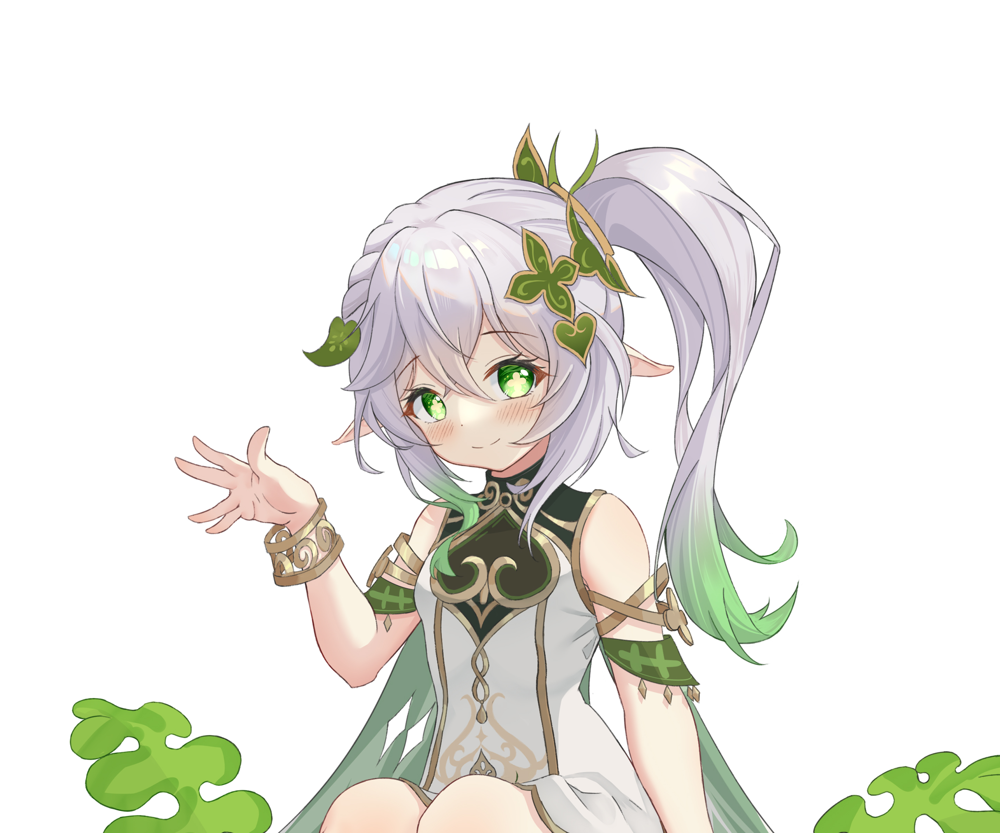

RIKY TEGUH WIJAYA
Kushanali
Lesser Lord Kusanali atau juga dikenal sebagai Dewa Bunga (Flower God) merupakan Archon Dendro yang kini menempati Sumeru. Ia merupakan yang termuda di antara The Seven dan baru diangkat menjadi Archon Dendro setelah God of Woods (Dewa Kayu) gugur pada Cataclysm 500 tahun lalu.Karena ideologi “kebijaksanaan”-nya, Lesser Lord Kusanali disebut sebagai God of Wisdom atau Dewa Kebijaksanaan. Kusanali sendiri pertama kali disebutkan oleh Zhongli saat membeli layangan untuk Rite of Parting di “Downtown”. Setelahnya Ganyu menyebutkan bahwa Kusanali masih berada dalam “Aroma Soliter” atau isolasi diri, mengingat bahwa ia adalah Archon termuda yang masih harus membangun kekuatannya.
Teaser Sumeru Kushanali | Genshin Impact
| Rarity | Senjata | Gnosis | Gender | Archon |

|
Catalyst | Dendro | Famale | Dendro |
| Elemental Skill | Elemental Burst | Normal Attack | Elemental Reaction | Kushanali Showcase |